Abra o Roblox Studio
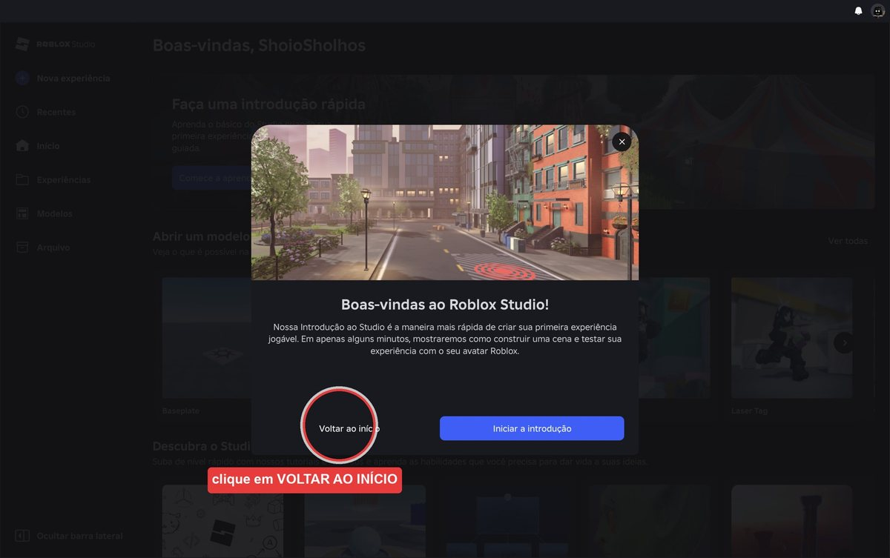
Foto da tela.
Abra o Roblox Studio. A tela que aparece é a Início, com uma barra de menus na esquerda: Nova experiência, Recentes, Início, Experiências, Modelos e Arquivo.
Se aparecer um convite para uma Introdução ao Studio, não clique — é uma aula da própria Roblox, não é a nossa.
- Abriu direto um projeto
- Feche a aba dele no x ao lado do nome. Você volta para esta tela.
- Não aparece o meu nome
- Você não está conectado. Clique em Entrar no canto superior direito.
- A tela está diferente da foto
- Pode ter mais ou menos fileiras, dependendo do que você já fez. A barra da esquerda é sempre igual.
Escolha o modelo BASEPLATE
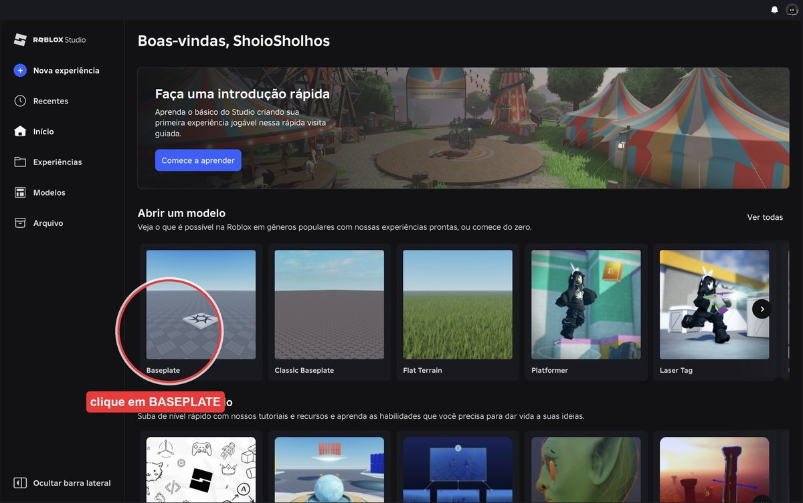
Foto da tela.
Role a página para baixo até a fileira Abrir um modelo. São projetos prontos para começar: Baseplate, Classic Baseplate, Flat Terrain, Platformer, Laser Tag.
Clique no primeiro, o Baseplate. Ele é o mais vazio de todos, e é isso que queremos: o mundo vai ser seu, não de um modelo pronto.
- Não acho a fileira dos modelos
- Clique em Modelos na barra da esquerda: abre uma página só com eles.
- Demora muito para abrir
- Na primeira vez leva uns 20 segundos. É normal.
- Cliquei no modelo errado
- Feche a aba no x e comece de novo pelo Baseplate.
Abra a lista e veja o que já veio pronto
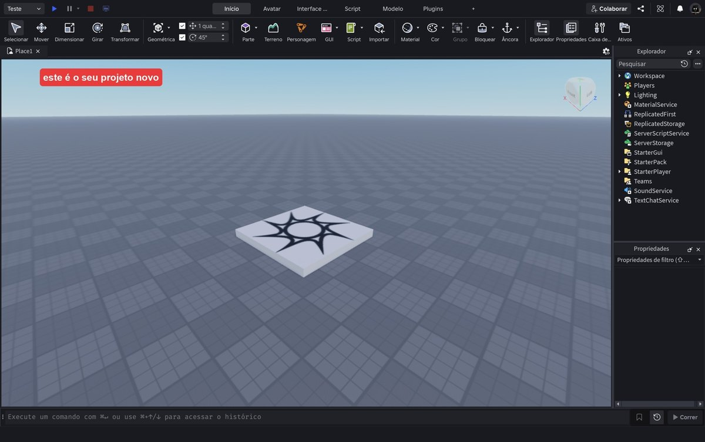
Foto da tela.
A lista da direita chama-se Explorador — é tudo que existe no seu mundo. Ela vem fechada.
Clique na setinha à esquerda da palavra Workspace para abrir.
Aparecem duas coisas que interessam: Baseplate, que é o chão quadriculado, e SpawnLocation, o círculo onde o seu bonequinho nasce. Tudo que você criar hoje vai entrar nessa mesma lista.
- Cliquei e fechou de novo
- Você clicou duas vezes. Clique uma só na setinha.
- Não tenho o Explorador
- Aba Início lá em cima, botão Explorador.
- Só aparece Workspace, Players, Lighting…
- É a lista fechada. Falta clicar na setinha do Workspace.
Clique na aba MODELO
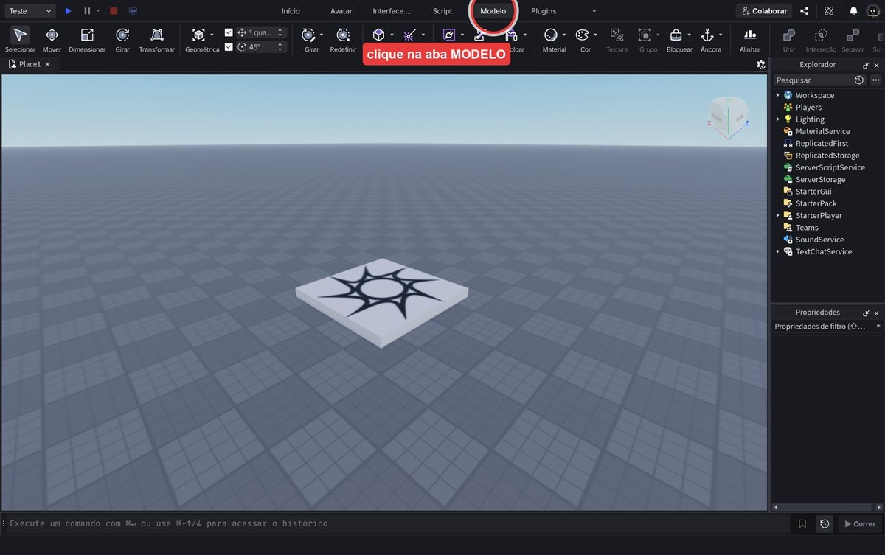
Foto da tela.
Na linha bem de cima existem abas. Clique em Modelo.
Isto é obrigatório. Cada aba mostra botões diferentes. Se você ficar na aba errada, os botões desta aula simplesmente não existem na sua tela — e você vai procurar por nada.
- Não acho a aba Modelo
- Ela fica entre Script e Plugins.
- Cliquei e nada mudou
- Você já estava nela. Pode seguir.
Crie a sua primeira peça
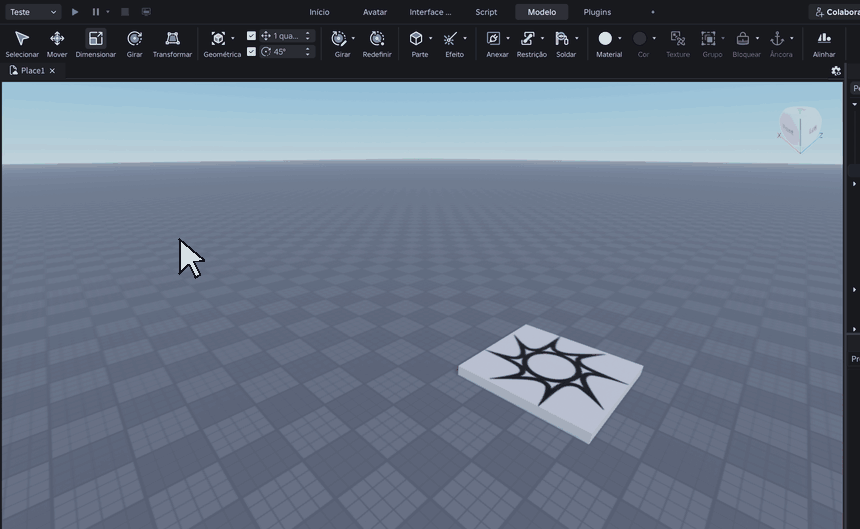
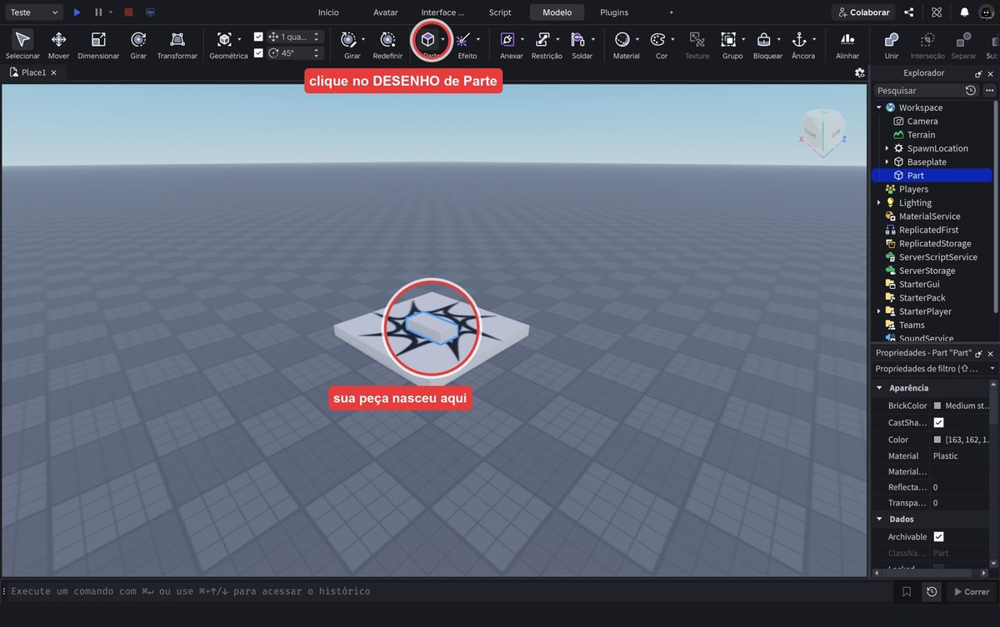
O clipe repete sozinho. Repare onde o cursor vai antes de clicar.
Clique em Parte — no desenho, não na palavra embaixo dele.
Clicar na palavra não faz absolutamente nada. É o erro mais comum desta aula inteira.
- Cliquei e não aconteceu nada
- Você clicou na palavra. Clique no desenho acima dela.
- Apareceu Part na lista mas eu não vejo a peça
- Clique em Part na lista e aperte a tecla F. A câmera vai até ela.
- Criei duas sem querer
- Aperte Ctrl + Z. Desfaz a última coisa.
Ancore a peça
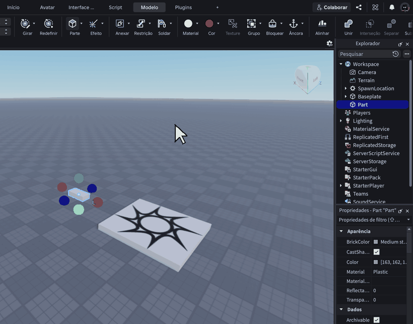
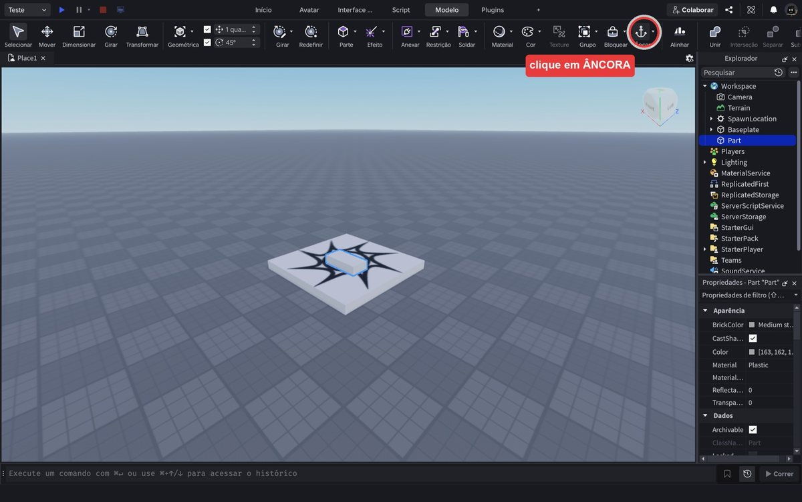
O clipe repete sozinho. Repare onde o cursor vai antes de clicar.
Com a peça ainda selecionada, clique em Âncora.
Âncora prende a peça no ar. Peça sem âncora despenca no segundo em que o jogo começa.
A regra do dia: criou, ancorou. Toda peça, toda vez.
- Como sei se ancorou?
- Na lista de Propriedades, digite anchor na caixa de busca. A caixinha Anchored fica marcada.
- A peça não está selecionada
- Clique no nome Part na lista da direita. Selecionada = com borda azul em volta.
Ligue a ferramenta MOVER
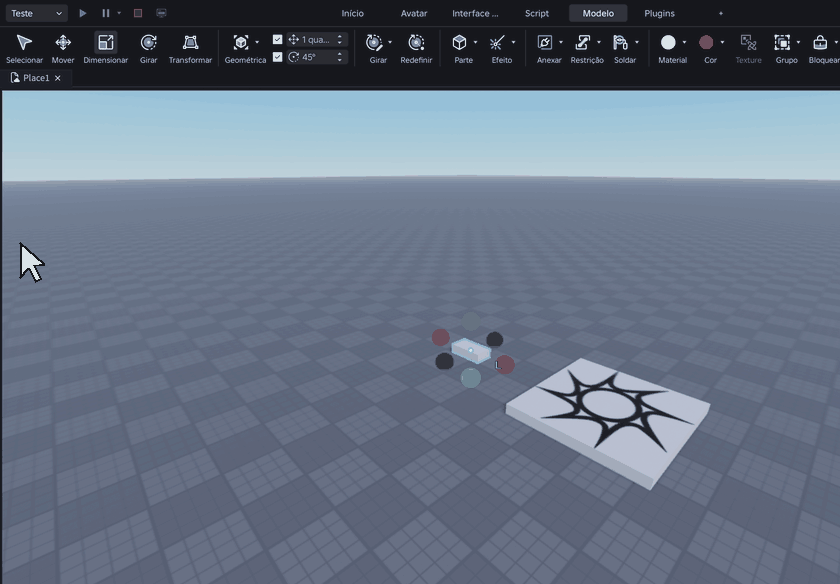
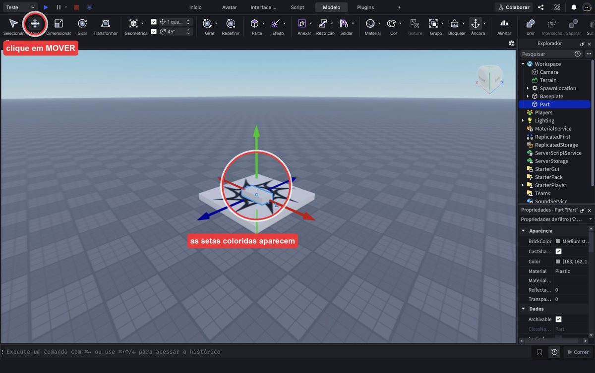
O clipe repete sozinho. Repare onde o cursor vai antes de clicar.
Clique em Mover, no canto esquerdo da faixa.
Aparecem três setas coloridas na peça:
vermelha e azul movem para os lados
verde move para cima e para baixo
- Não aparece seta nenhuma
- A peça não está selecionada. Clique no nome dela na lista.
- Aparecem bolinhas em vez de setas
- Você clicou em Dimensionar. Clique em Mover.
Arraste pela seta, nunca pela peça
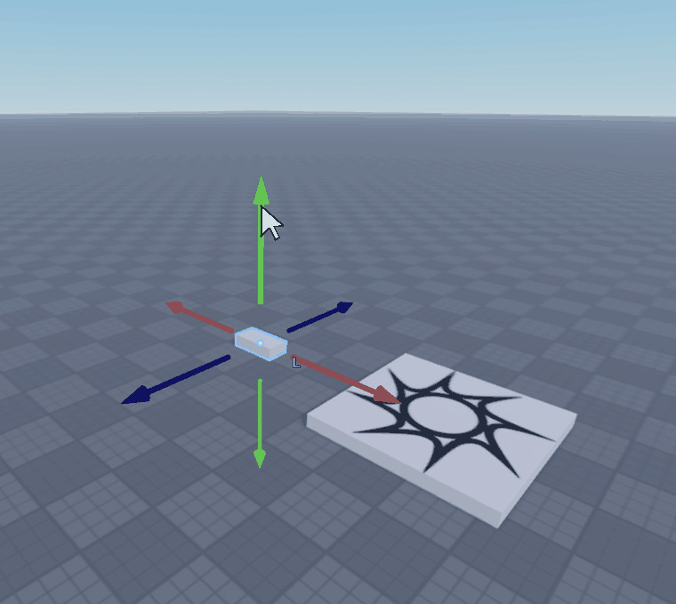
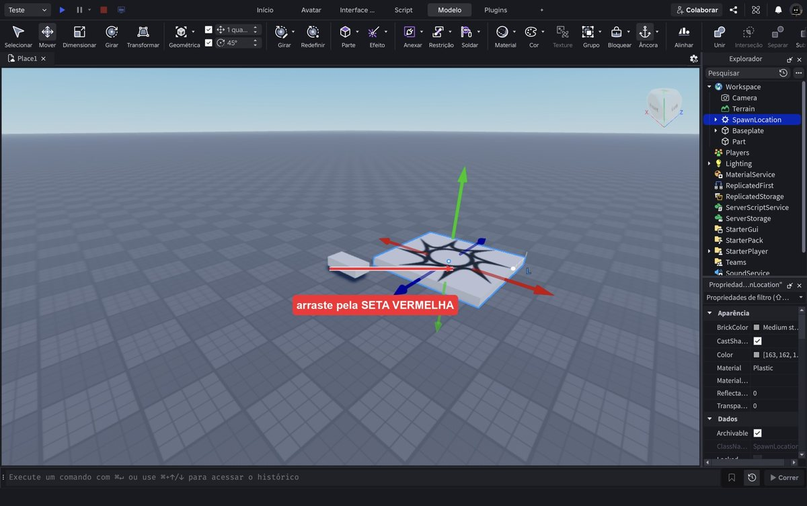
O clipe repete sozinho. Repare onde o cursor vai antes de clicar.
Segure o botão do mouse em cima da seta e arraste.
Se você arrastar pelo meio da peça, ela vai para onde você não quer.
Leve a peça para perto do círculo onde o bonequinho nasce.
- Arrastei e foi para o lugar errado
- Ctrl + Z desfaz. Tente pegando exatamente em cima da seta.
- Depois de arrastar as setas sumiram
- É normal — arrastar solta a seleção. Clique na peça de novo.
Copie a peça
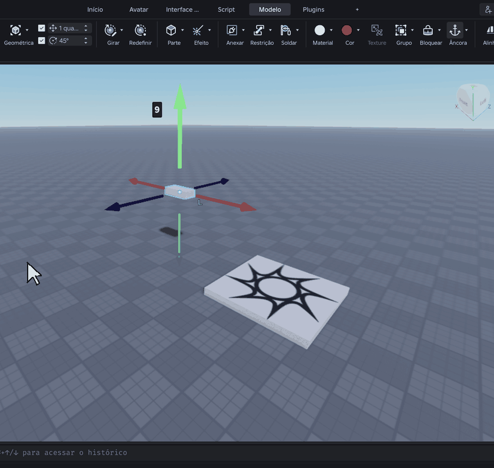
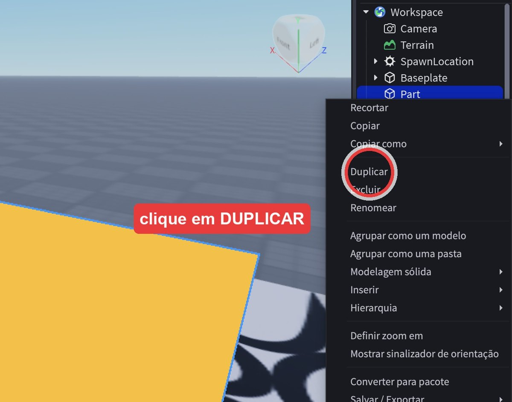
O clipe repete sozinho. Repare onde o cursor vai antes de clicar.
Clique no nome da peça na lista da direita para selecionar.
Depois clique nela com o botão direito do mouse e escolha Duplicar.
Quem preferir atalho: Ctrl + D.
A cópia nasce exatamente em cima da original — por isso parece que nada aconteceu.
Use as setas do Mover para puxar a cópia para a frente e um pouco mais alto.
A cópia já vem ancorada, porque herda tudo da original.
- Apertei Ctrl + D e nada aconteceu
- Nenhuma peça estava selecionada. Clique no nome dela na lista antes.
- O menu do botão direito não abriu
- Clique com o botão direito em cima do nome na lista, não no espaço vazio.
- Só vejo uma peça
- A cópia está dentro da original. Arraste pela seta que ela sai de lá.
- Fiz cópias demais
- Ctrl + Z desfaz uma por vez.
Abra a paleta de cores
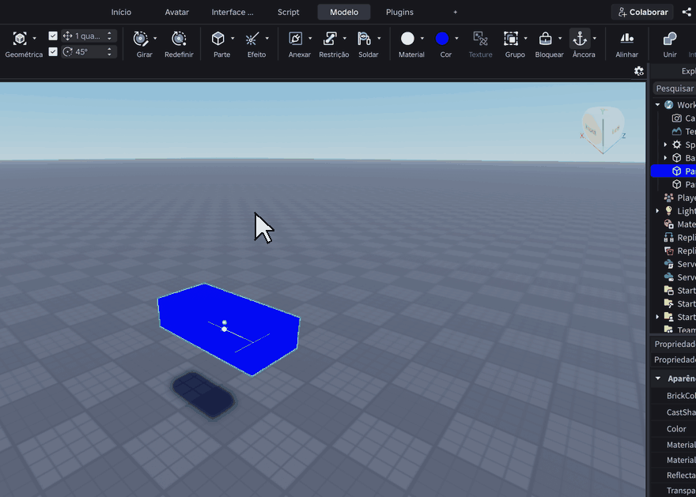
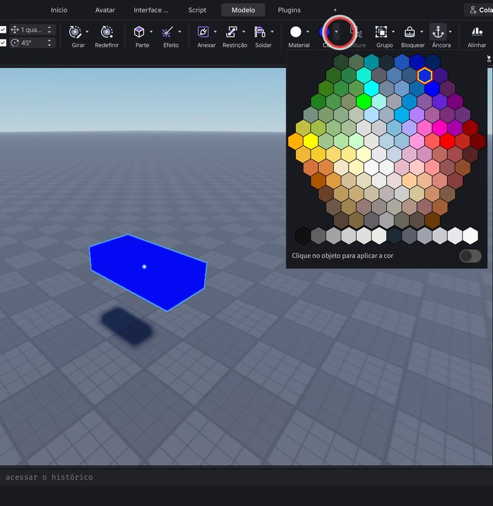
O clipe repete sozinho. Repare onde o cursor vai antes de clicar.
Com a peça selecionada, procure na faixa de cima o botão Cor — é um círculo colorido. Do lado direito dele há uma setinha pequena.
Clique na setinha, não no círculo.
- Cliquei e a peça mudou de cor sozinha
- Você clicou no círculo. O círculo aplica a cor que já estava escolhida. Aperte Ctrl + Z e clique na setinha ao lado dele.
- Não abriu nada
- Você clicou na palavra Cor embaixo. Clique na setinha à direita do desenho.
- Não acho o botão Cor
- Confira lá em cima se a aba Modelo está aberta. O botão Cor só existe nessa aba.
Escolha a cor e aplique

O clipe repete sozinho. Repare onde o cursor vai antes de clicar.
Clique no hexágono da cor que você quiser. O painel fecha sozinho e o círculo do botão Cor passa a ter essa cor.
Agora clique no círculo do botão Cor. É esse segundo clique que pinta a peça.
- Escolhi a cor e a peça não mudou
- Falta o segundo clique. Escolher no painel só separa a cor; quem pinta é o clique no círculo do botão Cor.
- Cliquei no círculo e mesmo assim não pinta
- No rodapé do painel de cores tem um interruptor “Clique no objeto para aplicar a cor”. Ele precisa ficar desligado (cinza). Ligado, o botão Cor para de funcionar.
- Pintou a peça errada
- Ctrl + Z, clique na peça certa e repita.
Abra a lista de materiais
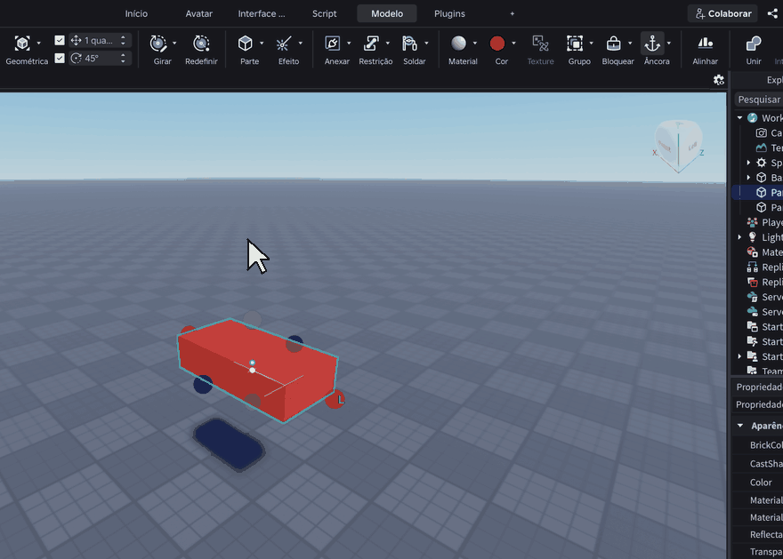
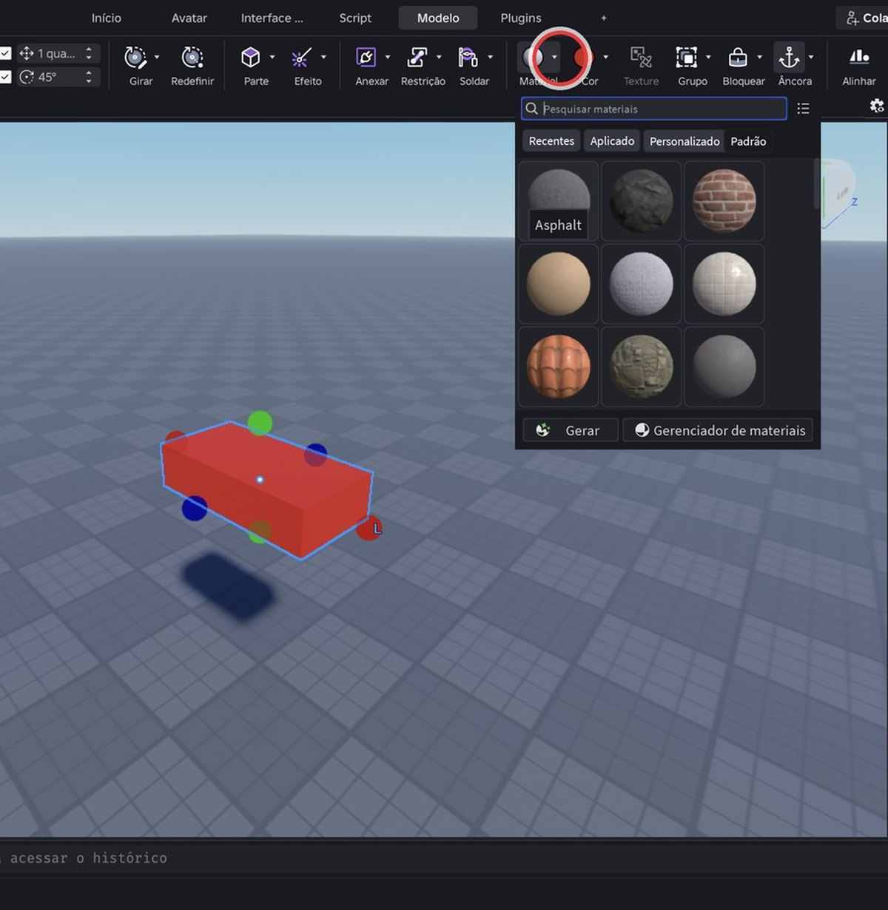
O clipe repete sozinho. Repare onde o cursor vai antes de clicar.
Ainda na aba Modelo, ao lado do botão Material existe outra setinha. Clique nela.
- Abriu e fechou na hora
- Clique uma vez só e não arraste o mouse.
- Não acho o botão Material
- Fica na mesma faixa, à esquerda do botão Cor, ainda na aba Modelo.
Escolha NEON
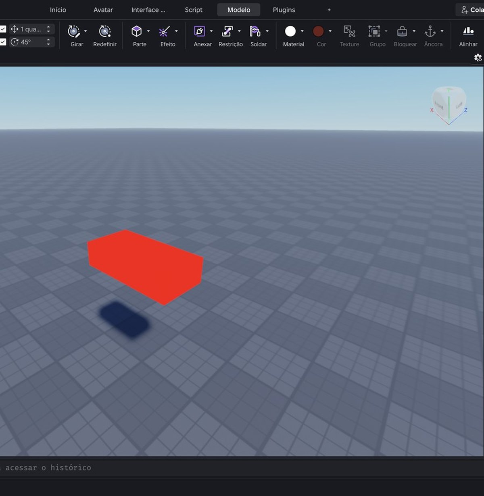
O clipe repete sozinho. Repare onde o cursor vai antes de clicar.
No alto do painel tem a caixa Pesquisar materiais. Clique dentro dela — ela fica com borda azul — e escreva neon.
Vai sobrar uma bolinha branca só. Clique nela.
- Escrevi e não filtrou nada
- A caixa já tinha texto guardado de antes e virou neonneon. Clique no ⊗ no lado direito da caixa para limpar e escreva de novo.
- Escrevi e a tela se mexeu sozinha
- A caixa não estava com o foco, então as letras foram para o mundo 3D (a letra e sobe a câmera). Clique dentro da caixa, confira a borda azul, e só então escreva.
- Não vejo diferença
- Em peça pequena o material muda pouco. Neon é o mais visível de todos — confira na lista de Propriedades se está escrito Neon.
Mude o tamanho de uma peça
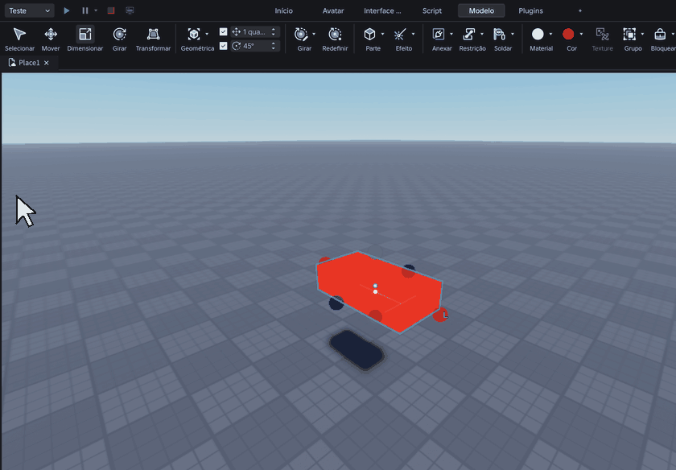
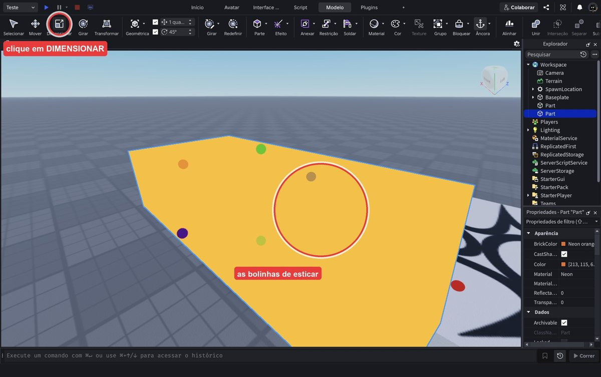
O clipe repete sozinho. Repare onde o cursor vai antes de clicar.
Selecione uma peça e clique em Dimensionar na faixa.
Aparecem bolinhas nos cantos e no meio dos lados. Arraste uma bolinha para esticar ou encolher.
Faça uma plataforma bem estreita — o pulo fica muito mais difícil.
- Aparecem setas em vez de bolinhas
- Você está em Mover. Clique em Dimensionar.
- Ficou fina demais e sumiu
- Ctrl + Z e puxe menos.
- Estiquei para o lado errado
- Cada bolinha estica num sentido. Solte, Ctrl + Z, e pegue outra.
Faça a terceira plataforma
Foto da tela.
Mesma receita de antes: clique no nome da peça na lista, botão direito, Duplicar, e arraste a cópia com as setas.
Ponha a terceira mais à frente e mais alta que a segunda. Agora você tem degraus subindo.
- Ficaram muito longe uma da outra
- Aproxime. Se o bonequinho não alcança pulando, ninguém atravessa.
- Ficaram muito altas
- Cada degrau deve subir pouco — mais ou menos a altura do próprio bonequinho.
Olhe o seu percurso
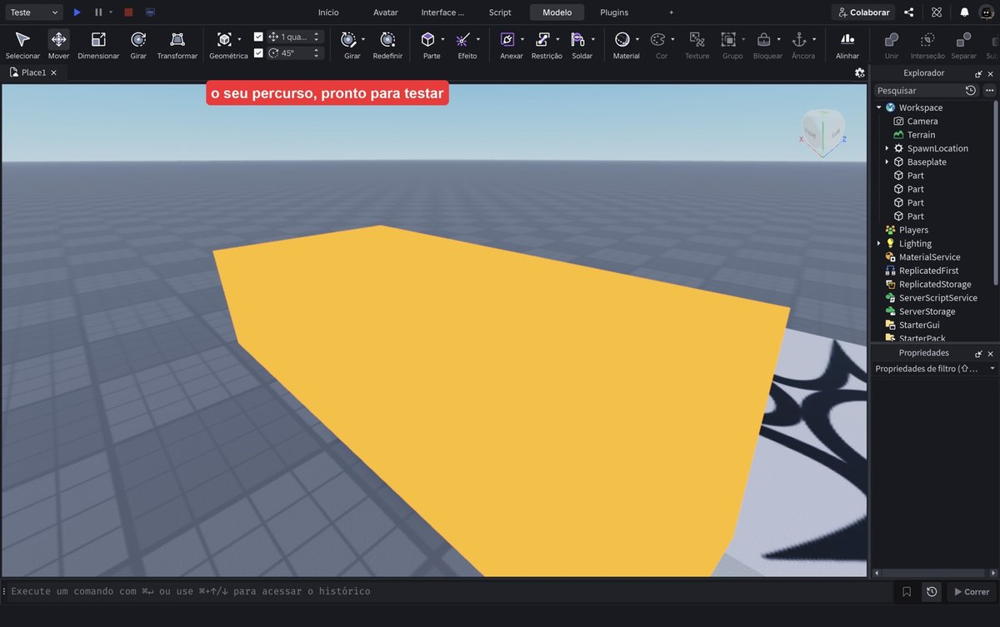
Foto da tela.
Antes de testar, dê uma olhada geral. Este é o seu obby.
Confira: todas as peças estão ancoradas? Os pulos parecem possíveis? As cores ajudam a enxergar o caminho?
- Não consigo ver tudo de uma vez
- Role a rodinha do mouse para trás — a câmera afasta.
- Alguma peça está solta no ar sem sentido
- Arraste com as setas para o lugar certo, ou Ctrl + Z.
Entre no seu jogo
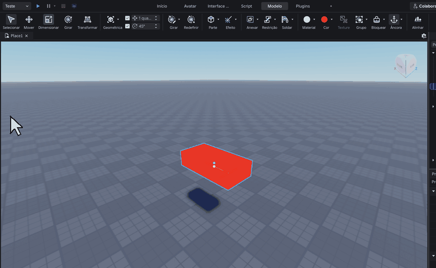
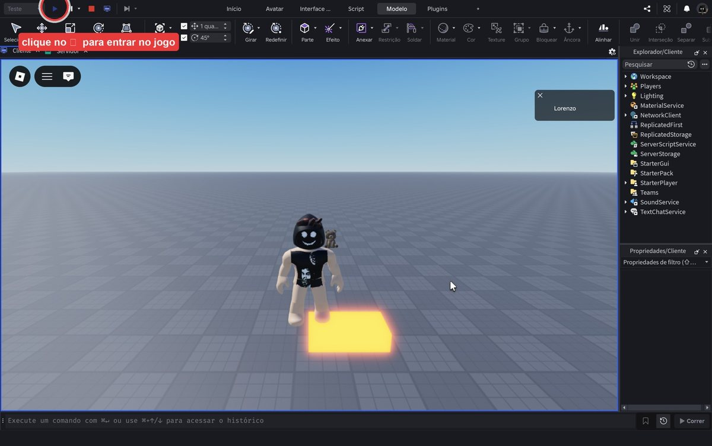
O clipe repete sozinho. Repare onde o cursor vai antes de clicar.
No canto superior esquerdo, ao lado do botão Teste, existe um triângulo ▶.
Clique nele. O Studio carrega o seu mundo e você vira o bonequinho, nascendo no círculo.
Pode demorar alguns segundos.
- Não acho o triângulo
- Fica na barra de cima, à esquerda de tudo, perto da palavra Teste.
- Cliquei e não aconteceu nada
- Espere. Na primeira vez pode levar até um minuto.
- Nasci embaixo do chão
- Sua peça pode estar tapando o círculo de nascimento. Pare, mova a peça e teste de novo.
Teste o percurso
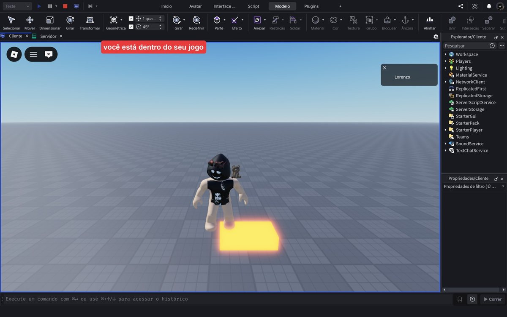
Foto da tela.
Ande com W A S D e pule com a barra de espaço.
Tente atravessar da primeira plataforma até a última.
Se alguma peça cair quando o jogo começa, ela não estava ancorada. É agora que você descobre.
- Uma peça caiu
- Faltou a âncora nela. Pare, selecione a peça e clique em Âncora.
- Não consigo pular tão alto
- Pare e abaixe a plataforma. O bonequinho pula pouco mais que a própria altura.
- Caí e nasci no começo
- É assim mesmo por hoje. Checkpoint é assunto da próxima aula.
Pare o jogo e salve o que fez
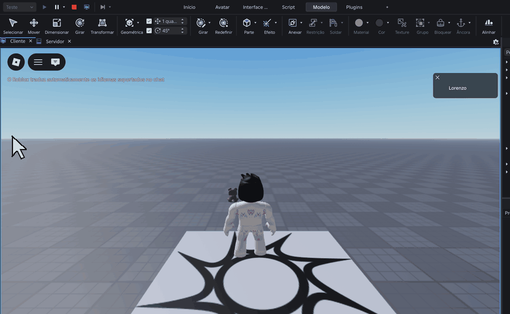
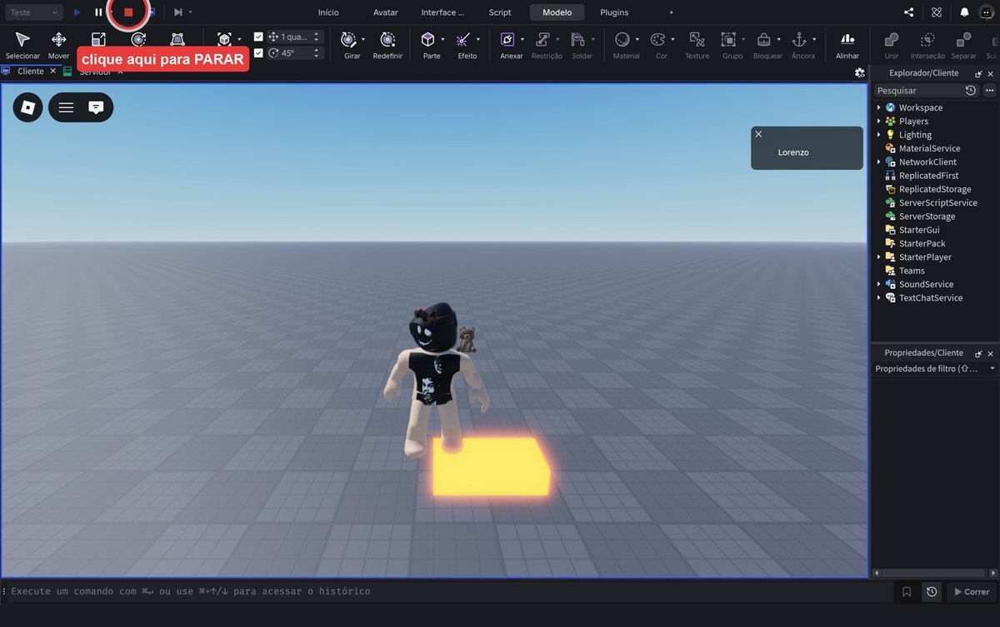
O clipe repete sozinho. Repare onde o cursor vai antes de clicar.
Clique no botão de parar (o quadradinho ao lado do triângulo). Você volta ao modo de construir. Tudo que você mudou durante o jogo não é guardado — só o que você construiu antes de apertar ▶.
Agora salve: aperte Ctrl + S. Ele pergunta onde — escolha Salvar em arquivo, dê o nome obby e guarde numa pasta que você lembre.
Pronto. Agora vá jogar o obby do colega do lado, e conte para ele qual foi o pulo mais difícil.
- O jogo não para
- O botão de parar é o quadradinho ao lado do triângulo.
- Perdi o que fiz durante o jogo
- É o normal do Studio: mudanças feitas jogando não ficam. Construa sempre com o jogo parado.
- O Ctrl + S quer publicar na Roblox
- Escolha Salvar em arquivo. Publicar é assunto da Aula 4.
- Não consigo salvar com o jogo rodando
- Pare o jogo primeiro, no quadradinho vermelho.